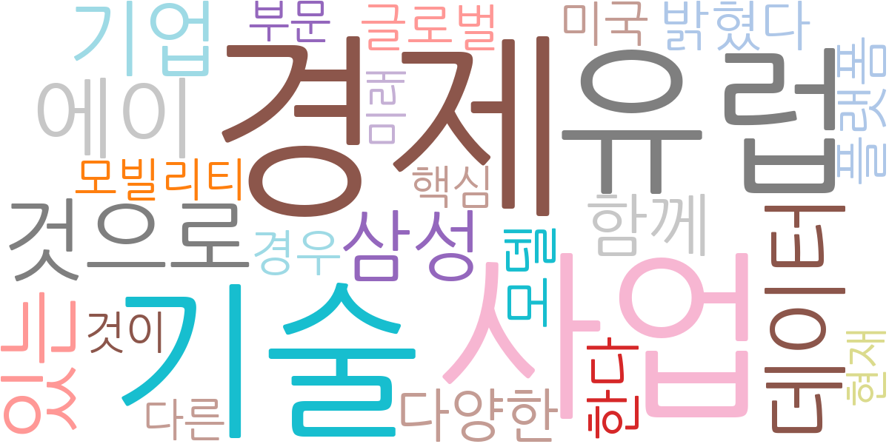
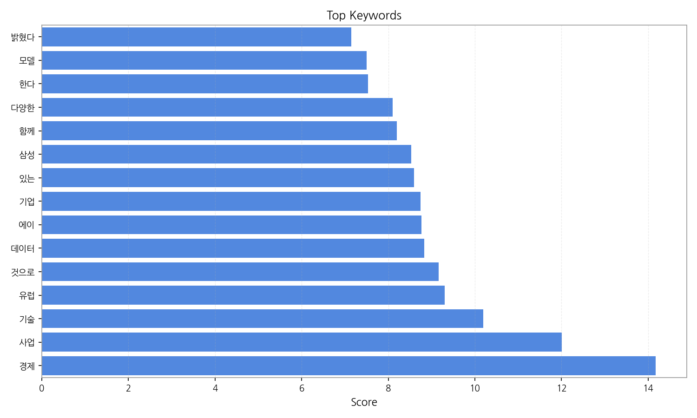
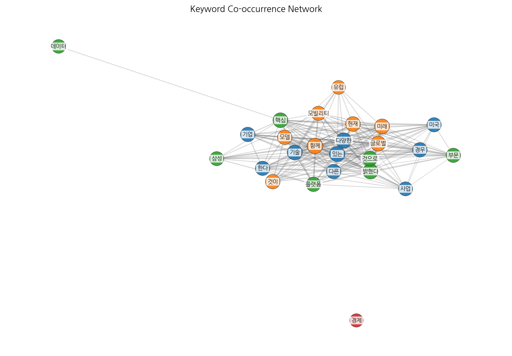
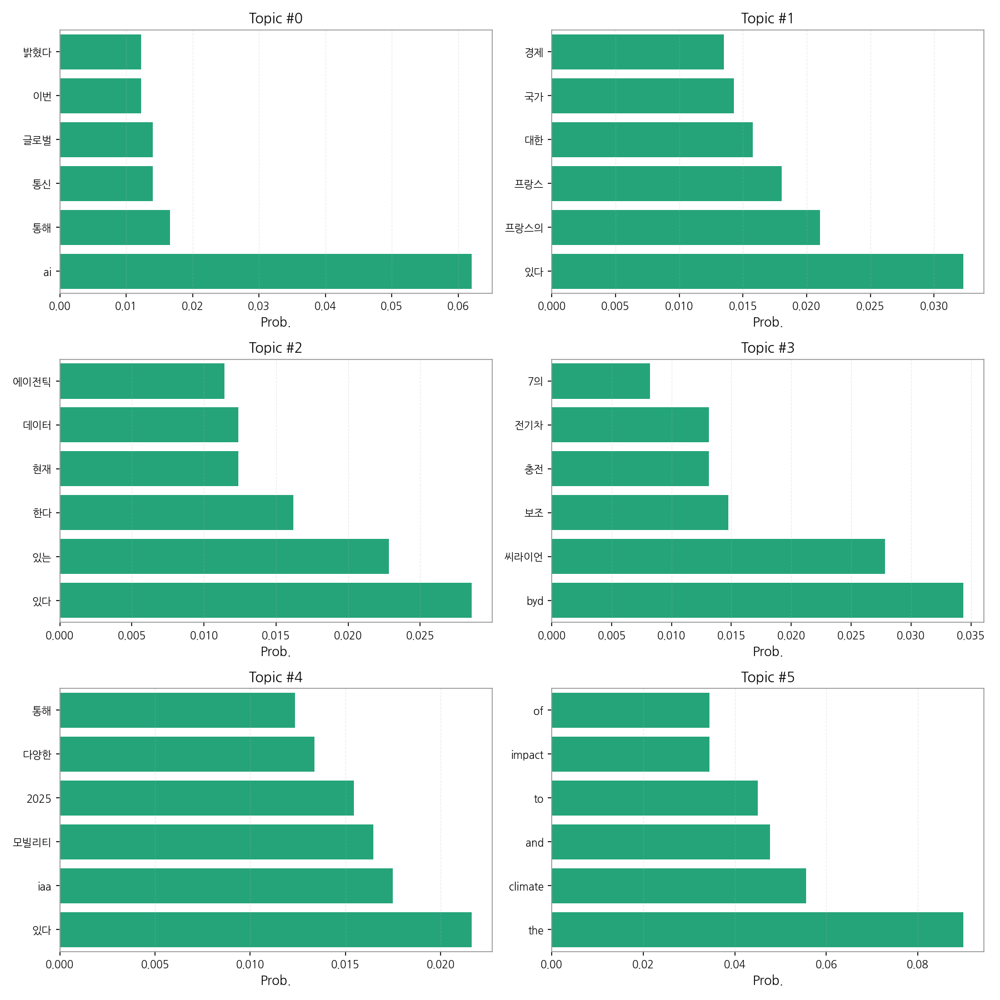
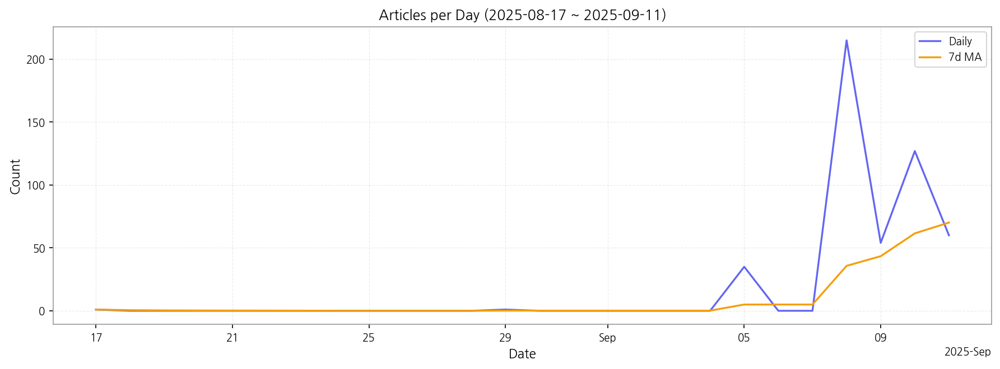

1) 상위 토픽을 3개 주제로 묶어 핵심 맥락을 설명하면 다음과 같습니다. 첫째, AI와 글로벌 통신 사업 관련 뉴스가 증가하고 있습니다. AI 기술을 활용한 새로운 사업 모델이나 서비스 출시, 글로벌 시장 진출 등의 내용이 주를 이룰 것으로 예상됩니다. 둘째, 프랑스 경제 및 국가 정책과 관련된 기사들이 다수를 차지하며, 프랑스의 경제 동향이나 정부 정책 변화에 대한 분석 및 전망을 담고 있을 가능성이 높습니다. 셋째, 전기차 및 모빌리티 산업의 동향을 보여주는 기사들이 많은데, 특히 전기차 보조금 정책, 신차 출시, 그리고 미래 모빌리티 기술 개발 등에 대한 내용이 주요하게 다뤄질 것으로 예상됩니다.
2) 최근 변화/스파이크를 짚어보면, 2025년 9월 8일에 기사 수가 급증(215건)한 것을 확인할 수 있습니다. 이는 특정 이벤트나 뉴스 발표에 의한 것으로 추정되며, 이 시점 이전과 이후의 기사 내용을 분석하여 원인을 파악해야 합니다.
3) 실무 인사이트 3가지:

| Rank | Keyword | Score |
|---|---|---|
| 1 | 경제 | 14.178 |
| 2 | 사업 | 12.010 |
| 3 | 기술 | 10.195 |
| 4 | 유럽 | 9.300 |
| 5 | 것으로 | 9.164 |
| 6 | 데이터 | 8.830 |
| 7 | 에이 | 8.764 |
| 8 | 기업 | 8.745 |
| 9 | 있는 | 8.591 |
| 10 | 삼성 | 8.530 |
| 11 | 함께 | 8.203 |
| 12 | 다양한 | 8.099 |
| 13 | 한다 | 7.531 |
| 14 | 모델 | 7.496 |
| 15 | 밝혔다 | 7.144 |




1) 상위 토픽을 3개 주제로 묶어 핵심 맥락을 설명하면 다음과 같습니다. 첫째, AI와 글로벌 통신 사업 관련 뉴스가 증가하고 있습니다. AI 기술을 활용한 새로운 사업 모델이나 서비스 출시, 글로벌 시장 진출 등의 내용이 주를 이룰 것으로 예상됩니다. 둘째, 프랑스 경제 및 국가 정책과 관련된 기사들이 다수를 차지하며, 프랑스의 경제 동향이나 정부 정책 변화에 대한 분석 및 전망을 담고 있을 가능성이 높습니다. 셋째, 전기차 및 모빌리티 산업의 동향을 보여주는 기사들이 많은데, 특히 전기차 보조금 정책, 신차 출시, 그리고 미래 모빌리티 기술 개발 등에 대한 내용이 주요하게 다뤄질 것으로 예상됩니다.
2) 최근 변화/스파이크를 짚어보면, 2025년 9월 8일에 기사 수가 급증(215건)한 것을 확인할 수 있습니다. 이는 특정 이벤트나 뉴스 발표에 의한 것으로 추정되며, 이 시점 이전과 이후의 기사 내용을 분석하여 원인을 파악해야 합니다.
3) 실무 인사이트 3가지:
| Idea | Target | Value Prop | Score |
|---|---|---|---|
| AI 기반 글로벌 뉴스 모니터링 및 분석 플랫폼 | 글로벌 사업을 영위하는 대기업, 중견기업의 경영 기획 부서, 시장 분석 부서, 투자 부서 (직원 수 500명 이상) | AI 기반의 뉴스 모니터링 및 분석 플랫폼을 통해 실시간으로 글로벌 시장 동향을 파악하고, 잠재적 위험과 기회를 신속하게 식별할 수 있도록 지원합니다. 다국어 지원 및 심층 분석 기능을 통해 효율적인 의사결정을 지원하며, 경쟁사 분석 및 시장 예측 기능을 제공합니다. | 4.50 |
| 프랑스 시장 진출 전략 컨설팅 서비스 | 프랑스 시장 진출을 계획하는 한국 기업 (중소, 중견기업 포함) | 프랑스 현지 전문가 네트워크를 활용하여 맞춤형 시장 진출 전략을 수립하고 실행을 지원합니다. 시장 조사, 법률 자문, 현지 파트너 발굴, 마케팅 전략 수립 등을 포함한 종합적인 컨설팅 서비스를 제공합니다. 프랑스 문화 및 비즈니스 관행에 대한 깊이 있는 이해를 바탕으로 성공적인 시장 진출을 지원합니다. | 4.00 |
| 전기차 충전 인프라 구축 및 관리 플랫폼 | 전기차 충전소 운영 사업자, 건물 소유주, 지자체 (중소기업 포함) | 전기차 충전 인프라 구축 및 관리를 위한 통합 플랫폼을 제공합니다. 충전소 설치 및 관리, 요금 관리, 고객 관리, 실시간 모니터링 등을 포함한 종합적인 서비스를 제공합니다. AI 기반 예측 기술을 활용하여 충전 수요를 예측하고 효율적인 충전소 운영을 지원합니다. | 3.80 |
| AI 기반 전기차 배터리 관리 및 예측 시스템 | 전기차 제조사, 배터리 제조사, 전기차 정비 업체 (대기업, 중견기업) | AI 기반의 전기차 배터리 관리 및 예측 시스템을 통해 배터리 상태를 실시간으로 모니터링하고 수명을 정확하게 예측합니다. 배터리 성능 저하를 예방하고 유지보수 비용을 절감하며, 전기차 운행 효율을 높입니다. 예측 정비를 통해 배터리 교체 및 수리 비용을 줄일 수 있습니다. | 3.50 |
| 프랑스 기업 대상 B2B 전자상거래 플랫폼 | 프랑스 중소, 중견기업 및 한국 기업 (B2B 거래) | 프랑스어 지원 및 프랑스 비즈니스 관행에 맞춘 B2B 전자상거래 플랫폼을 제공합니다. 안전하고 효율적인 거래 환경을 조성하고, 다양한 결제 및 물류 서비스를 지원합니다. 프랑스 시장 정보 및 기업 정보를 제공하여 거래 파트너 발굴을 지원합니다. | 3.20 |